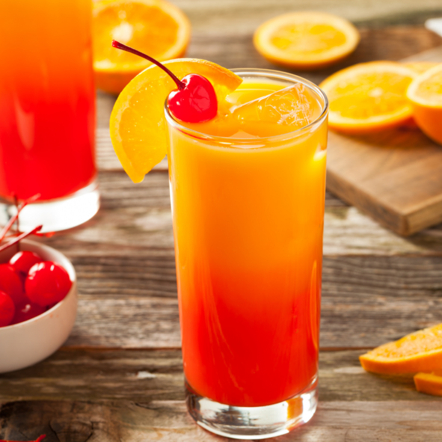
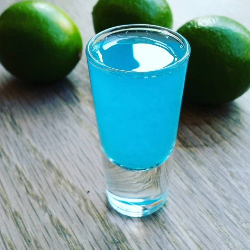
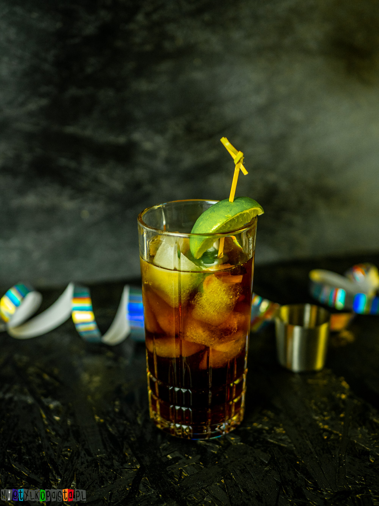

Filter
Kliknij element poniżej aby wysunąć panel boczny.
☰ openKliknij element poniżej aby wysunąć panel boczny.
☰ open| Tequila Sunrise |  |
|||||||||
|---|---|---|---|---|---|---|---|---|---|---|
| Składniki: tequila - 60 ml sok pomarańczowy - 120 ml grenadyna - 20 ml kostki lodu |
||||||||||
| Sposób przygotowania: Tequilę i sok pomarańczowy wlej do szklanki wypełnionej kostkami lodu, dobrze wymieszaj. Następnie wlej delikatnie grenadyna, aby osiadła na dno. Całość możesz ozdobić kawałkiem pomarańczy. |
||||||||||
| Shot Kamikaze |  |
|||||||||
|---|---|---|---|---|---|---|---|---|---|---|
| Składniki: 20 ml wódki 10 ml triple sec 10 ml soku z cytryny. |
||||||||||
| Sposób przygotowania: Wszystkie wymienione składniki należy wstrząsnąć w shakerze, po czym rozlać do kieliszków. |
||||||||||
| Cuba Libre |  |
|||||||||
|---|---|---|---|---|---|---|---|---|---|---|
| Składniki: rum - 50 ml Coca-Cola - 120 ml sok z limonki - 10 ml kostki lodu |
||||||||||
| Sposób przygotowania: Do szklanki Old Fashioned wypełnionej kostkami lodu wlewamy wszystkie składniki i mieszamy. Sok z limonki możemy wycisnąć mudlerem podobnie jak w Mohito. Do szklanki możemy również wrzucić ćwiartkę limonki do ozdoby. |
||||||||||